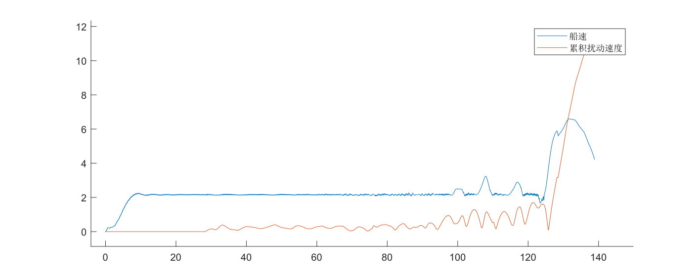

Unity3D¶
场景 Auto
- 海洋环境
Ocean_OpaqueQueue1 Targets用于生成、展示目标点LoadTargets.cs
USV Group用于生成、控制无人艇Navigation.cs创建无人艇, 并实时更新无人艇控制的参考输入, 即导引算法USV Variant预制体KinematicUSV.cs无人艇运动学模型Disturbance.cs随波浪飘动. (crest 海洋环境有现成的效果2)MoveController.cs创建ADRC控制器对无人艇的速度和航向进行控制class ADRCADRC 控制器
1 关于无人艇模型 KinematicUSV.cs¶
Unity 中有刚体组件可以添加力之类的, 但是无人艇运动模型要更复杂一些, 我没想到如何用Unity的刚体实现此模型.
KinematicUSV.cs, 根据控制器给出的推力和转矩, 对 transform 进行更新. (也保留外部对其更改)
后续应该与刚体组件进行兼容,
例如舍弃无人艇模型中的 x, y, psi 状态变量, 直接由Unity里的坐标和旋转信息获取.
无人艇模型中的速度和角速度与刚体组件的速度和角速度同步. (?)
这样通过对刚体组件施加力, 就可以通过 KinematicUSV.cs 计算得到速度. (?)
2 关于推力限定与ADRC控制¶
MATLAB 里螺旋桨推力限定为 \([0,50]\),
但是螺旋桨反转的话, 力的方向就相反. 所以推力可以为负
ADRC 需要调整:
- 控制量输出震荡比较大, 参数应该还需要再调一下, 对于微小偏差反映比较大
- 还有很重要的一点是, 另外对力进行限定的话, 又会产生一部分系统设计带来的"扰动", 例如控制器输出 100, 经过限定后变为 50, ADRC 会认为存在扰动并尝试增大输出来抵消此"扰动". 这有可能是控制器输出震荡的原因之一.
3 运行期间控制观察角度¶
给 camera 挂脚本, 键盘控制, 调整 transform
UnityEngine.Transform - Unity 脚本 API
【Unity3D】键盘鼠标控制视角的移动_yongh701 的博客-CSDN 博客_unity 鼠标控制视角
4 控制船位移 Transform¶
查表
4.1 船的位置¶
- 直接更新 position
transform.position = transform.position + delta; - Transform-Translate - Unity 脚本 API
对于第二种方法，默认是船自身的坐标系。但是如果你的目标点、速度是在世界坐标系下的，就需要指定一下了。
4.2 船的角度¶
Transform.rotation 存储的并不是 Inspector 面板上看到的
Transform.rotation 存储 Quaternion。可以使用 rotation 来旋转 GameObject 或提供当前旋转。请勿尝试编辑/修改 rotation。Transform.rotation 小于 180 度。
要查看面板上显示的角度, 可以使用 transform.rotation.eulerAngles
- rotate:
- look at: 只需要知道船要对准的点(也就是目标点)就好了
Transform-LookAt - Unity 脚本 API
Unity欧拉角、四元素、旋转量_deanchang的博客-CSDN博客_unity欧拉角旋转顺序
4.2.1 平滑旋转¶
Transform-rotation - Unity 脚本 API
Quaternion-RotateTowards - Unity 脚本 API 这个可以指定方位, 慢慢旋转.
4.2.2 直接设定角度¶
transform.eulerAngles = new Vector3(0, psi, 0);
这个修改就和面板上的数据一致了.
transform.rotation = Quaternion.Euler(90, 0, 0); 这个效果好像也一样.
4.2.2.1 角度转化问题¶
Unity3D 里船头朝向的角度是 \(\theta_1\), 原始数据是 \(\theta_2\)
两者关于 \(\frac\pi 4\) 对称. 满足关系 \(\theta_1+\theta_2=\frac \pi 2+2k\pi\) (不知道应该怎么推导, 我归纳出来的)

4.2.3 FromToRotation¶
Quaternion-FromToRotation - Unity 脚本 API 让一个轴指向指定的方向.
Usually you use this to rotate a transform so that one of its axes eg. the z-axis - follows a target direction
toDirectionin world space.
指定船的 z 轴始终指向 世界坐标系下的某个方向.
System.Math.Sin() 使用弧度单位.
计算弧度时, 30 / 180 * Math.PI, 不起作用… 要把 PI 放前面, 不知道为啥 原因是 C# 计算的前两个数都是整数, 得到的就是整数 0… 除了 PI 放前面, 还可以变成 30.0 .
只能保证 z 轴指向, 并不能保证其他轴不变…

5 生成任务点¶
根据预制体生成新的物体是参考的 unity 用代码加载并创建一个预制体实例以及设置 position_lifereset 的博客-CSDN 博客_unity 代码加载预制体
可能也有其他方法 Unity 编辑器拓展功能之代码动态创建预制体_lq1340817945 的博客-CSDN 博客_unity 动态创建预制体
生成的物体默认是放在最外边… 想要设置层级关系为子物体.
设置物体的 father
UnityEngine.Transform - Unity 脚本 API
Unity 的层级关系是体现在 transform 里面.
child 的 transform 位置以 father 的 transform 位置为起点.
设成子物体的好处在于:
1. 看着不乱
2. 可以统一管理
1. 方便查找 Transform-Find - Unity 脚本 API
2. 同步更新 foreach (Transform child in transform) { xxx }
最终可以这样写:
GameObject go = GameObject.Instantiate(Resources.Load("Target")) as GameObject;
go.transform.position = new Vector3(0, 0, 0);
go.transform.SetParent(GetComponent<Transform>());

5.1 Further¶
Object-Instantiate - Unity 脚本 API
一方面其实可以在最开始就指定 position 和 parent. (不过代码就会很长)
另一方面 "这些方法不会创建与新实例化对象的预制件连接。可以使用 PrefabUtility.InstantiatePrefab 创建具有预制件连接的对象。"
6 画线¶
线渲染器 (Line Renderer) - Unity 手册
轨迹渲染器 (Trail Renderer) - Unity 手册
创建一个空物体，然后添加 Trail Renderer. 这样好调线的位置.
然后线添加材质, 控制外观.
7 环境搭建¶
见 Scene 部分.
8 Disturbance.cs¶
Summary
其实波浪扰动应该是获得一个力和力矩, 然后通过 Unity 里的刚体组件施加.
但是我暂时没找到好的方法让船的模型与刚体组件相融合
总的来说, 只是实现了一个简简简易版本的扰动作用
随波浪流动的干扰效果
查询波浪信息, 从而获得一个扰动
主要参考: CetoManual
使用 Ceto namespace 后, Ocean.Instance 可以查询到当前海洋物体.
波浪信息查询:
WaveQuery query = new WaveQuery(transform.position);
可在代码中找到 WaveQuery 的定义, 及其可查询到的信息.
Ocean 类的 Query 方法也可以用. 细节不一样.
波高
法线

波速
手册里没有提, 但是可以从 WaveSpectrum 中获取到.
Ocean.Instance.Spectrum.waveSpeed
随波浪前进
displacementX, displacementZ 是两个方向上的位移
上图代码把速度替换成波速 (乘以deltaTime) 就是随波浪流动了.
修改位置
后来发展, 这种扰动作用的实现是直接修改船的位置, 不会影响 KinematicUSV 里面的速度和角度, 进而也不会被(速度和角度)控制器观测到.
修改速度
后来改成修改速度和角度. 将波浪的速度与船的速度进行叠加.
单纯扰动作用下船的轨迹 (速度在0.5m/s-6m/s)


这样看的话其实扰动挺小的… 但是是每次更新都会改变这么多, 计算一个累积量就知道了.
其实前半段是体现了抗扰作用, 但是当扰动相对大到一定程度效果就不好了
比如中间突起那一段, 还有后半段当船速下降后, 系统就开始不稳定了… (也有可能是我实现的方法有未知bug)
总的来说, 扰动的实现需要有更好的方法.

逐渐增加强度, 印证了上面的想法… 扰动小时可以抵消一些, 大时就不稳定了.

9 坐标系¶
有一个不一样的坐标系, 比较容易混淆, 简单总结一下:
- 普通坐标系是我们一般习惯的, 左下角是坐标原点的坐标系.
- Unity 里的坐标系(这里不提垂直方向的y), 名字变了, psi (旋转角度) 方向变了, 规律是: 与普通坐标系下计算得到角度的和是\(0.5\pi+2k\pi\)
- 船坐标系其实和Unity里的坐标系是一致的, 只有名字变了.
- 另外, 船坐标系和普通坐标系沿 y=x 有对称关系, 就像一张纸从正反两面去看… 所以计算的时候是一样的… 假如你在普通坐标系下计算 f(x,y), 在 船/Unity 这个坐标系下计算 f(y,x) 结果是一样的. (总之有点乱…)
- 总之…
- 普通坐标系转换为 Unity 坐标系: Unity_z=Norm_x; Unity_x=Norm_y;
- 船坐标系转换为 Unity 坐标系: Unity_z=Boat_x; Unity_x=Boat_y;
在三个体系下有三套坐标系, 但不论怎样, 计算时画好坐标系, 统一成一个才不会算错